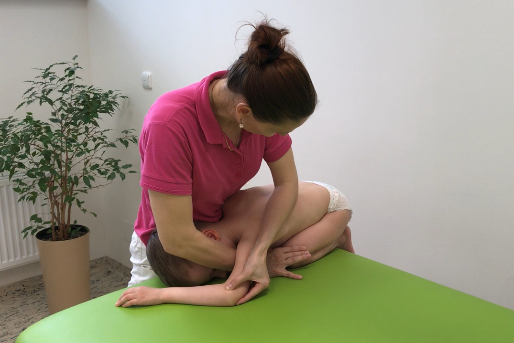
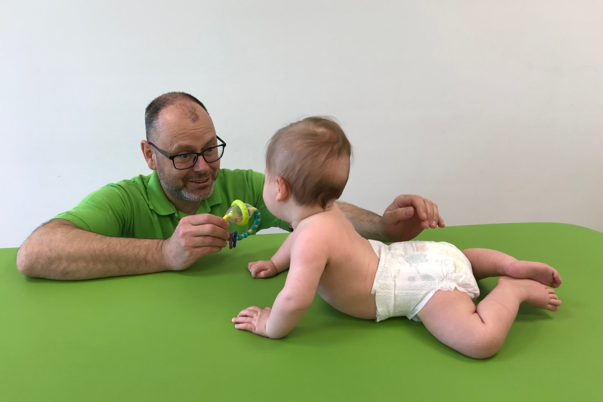

Vojta-Methode bei Säuglingen: wann beginnen und wie die Therapie abläuft
Veröffentlicht 10. 6. 2026 · Autor: Mgr. Miroslav Kutín, Physiotherapeut und Lehrtherapeut der Vojta-Methode

Hat Ihnen der Kinderarzt oder Neurologe Übungen nach der Vojta-Methode empfohlen und Sie wissen nicht, was Sie erwartet? In diesem Artikel beantworten wir die häufigsten Fragen der Eltern: wann mit der Therapie zu beginnen ist, wie der erste Besuch und das häusliche Üben ablaufen, warum das Baby während der Übungen weint und wann Sie mit den ersten Ergebnissen rechnen können.
Was ist die Vojta-Methode?
Die Vojta-Methode (Reflexlokomotion) ist eine anerkannte physiotherapeutische Methode, die der tschechische Neurologe Prof. MUDr. Václav Vojta entdeckte. Sie nutzt angeborene Bewegungsmuster, die sich bei jedem Menschen durch die Aktivierung genau definierter Auslösungszonen in einer bestimmten Ausgangslage abrufen lassen. Bei Säuglingen lässt sich dadurch die motorische Entwicklung positiv beeinflussen, bevor sich Ersatzbewegungsmuster (nicht ideale Muster) fixieren.
Ausführliche Informationen zum Prinzip der Methode, zu den Indikationen und zu Prof. Vojta finden Sie auf unserer Seite Vojta-Methode – vollständige Informationen.
Wann mit der Vojta-Methode bei einem Säugling beginnen?
So früh wie möglich nach Feststellung des Problems – idealerweise in den ersten Lebensmonaten. Je früher mit der Therapie begonnen wird, desto bessere Ergebnisse lassen sich in der Regel erzielen.
Das zentrale Nervensystem eines Säuglings ist unreif und formt sich in den ersten zwei Lebensjahren am intensivsten. Die Nervenbahnen sind anfangs oft nur funktionell blockiert und nicht strukturell geschädigt. Eine früh begonnene Therapie kann sie lösen oder beim Aufbau neuer Verbindungen helfen und so dem Kind eine normale motorische Entwicklung ermöglichen. Das bedeutet jedoch nicht, dass die Therapie später keinen Sinn mehr hat – die Vojta-Methode hilft in jedem Alter, auch im Erwachsenenalter.
Für welche Kinder ist die Vojta-Methode geeignet?
Die Vojta-Methode indizieren wir im Säuglings- und Kindesalter insbesondere bei:
- asymmetrischer Entwicklung (z. B. das Kind schaut ständig zu einer Seite – sog. Kopfpräferenz)
- verzögerter (retardierter) motorischer Entwicklung
- zentralen Koordinationsstörungen (ZKS)
- infantiler Zerebralparese (ICP)
- peripheren Paresen der Gliedmaßen (z. B. Plexus-brachialis-Parese)
- angeborenen Fehlbildungen des Bewegungsapparates (Hüftdysplasie, Pes equinovarus)
- Wirbelsäulenverkrümmungen (Skoliose) und anderen orthopädischen Fehlstellungen
- Störungen des Saugens, Kauens und Schluckens sowie Störungen der Atemfunktion
Wie läuft der erste Besuch ab?
Beim ersten Besuch führt der Physiotherapeut zunächst eine ausführliche kinesiologische Untersuchung durch – er beurteilt die Spontanmotorik des Kindes, die Lagereaktionen und die primitiven Reflexe. Auf Grundlage der Untersuchung legt er das Therapieziel fest, schlägt ein therapeutisches Vorgehen vor und richtet die Therapie genau aus.
Anschließend zeigt er den Eltern die konkreten Übungen und weist sie in deren Durchführung ein, denn der Hauptteil der Therapie findet zu Hause statt. Praktische Informationen zur Terminvereinbarung finden Sie auf der Seite Für Patienten.

Wie sieht die Übung selbst aus?
Das Kind wird in eine genaue Ausgangslage gebracht (auf dem Bauch, auf dem Rücken oder auf der Seite) und der Therapeut oder ein eingewiesener Elternteil löst mithilfe der Auslösungszonen ein Bewegungsmuster aus, das den einzelnen Bewegungen in der Entwicklung des Kindes entspricht. Das Kind übt dabei nichts bewusst selbst; sein Nervensystem antwortet auf den Reiz automatisch.
Das häusliche Üben findet üblicherweise mehrmals täglich in kurzen Blöcken statt. Die genaue Häufigkeit, Dauer und die konkreten Übungsvarianten legt der Physiotherapeut individuell fest und passt sie bei regelmäßigen Kontrollen laufend an die Entwicklung des Kindes an.
Warum weint das Kind während der Übungen? Tut es weh?
Die Vojta-Methode tut nicht weh. Das Weinen ist Ausdruck des Unbehagens über die ungewohnte Aktivierung, nicht von Schmerz.
Das Weinen während der Übung ist bei Säuglingen eine übliche Reaktion auf die ungewohnte und intensive Aktivierung – ein kleines Kind hat keine andere Möglichkeit zu zeigen, dass ihm die Situation nicht gefällt, ähnlich wie beim Anziehen oder Baden, das es ebenfalls nicht mögen muss. Nach Beendigung der Übung beruhigt sich der Säugling rasch, isst und schläft normal.
Wenn Sie unsicher sind, ob Ihr Kind angemessen reagiert, sprechen Sie immer mit Ihrem Therapeuten – eine korrekt durchgeführte Therapie schädigt oder traumatisiert das Kind nicht.
Wann stellen sich Ergebnisse ein?
Das hängt vom Alter des Kindes, vom Schweregrad und Charakter der Bewegungsstörung sowie von der Regelmäßigkeit des häuslichen Übens ab. Bei leichteren Asymmetrien sind Veränderungen oft innerhalb weniger Wochen erkennbar, bei schwereren Diagnosen ist die Therapie langwieriger. Den Verlauf werten wir regelmäßig aus und passen die Therapie an.
Wann nicht geübt werden darf (Kontraindikationen)
- akute entzündliche oder fieberhafte Erkrankungen (Temperatur über 38 °C)
- akuter wässriger Durchfall und intensives Erbrechen
- 2–7 Tage nach einer Impfung (je nach Art der Impfung und Reaktion des Kindes)
Häufig gestellte Fragen
So früh wie möglich nach Feststellung des Problems, idealerweise in den ersten Lebensmonaten, wenn das Nervensystem am formbarsten ist.
Nein. Das Weinen ist Ausdruck des Unbehagens über die ungewohnte Aktivierung, nicht von Schmerz. Nach der Übung beruhigt sich das Kind rasch.
Üblicherweise mehrmals täglich in kurzen Blöcken zu Hause; den genauen Plan legt der Physiotherapeut individuell fest.
Zur Beratung können Sie auch ohne Überweisung kommen. Für den Beginn der eigentlichen Therapie ist eine ärztliche Indikation erforderlich.
Über den Autor
Mgr. Miroslav Kutín ist Physiotherapeut und Lehrtherapeut der Vojta-Methode. Mit der Vojta-Methode behandelt er Kinder und Erwachsene und bildet darin weitere Physiotherapeuten aus. Er ist in der Praxis KM KINEPRO PLUS s.r.o. in Olmütz tätig.
Machen Sie sich Sorgen um die Entwicklung Ihres Kindes?
Vereinbaren Sie einen Termin zur Untersuchung der psychomotorischen Entwicklung in unserer Praxis in Olmütz.
Praxis kontaktierenDieser Artikel hat informativen Charakter und ersetzt nicht die Untersuchung durch einen Arzt oder Physiotherapeuten.